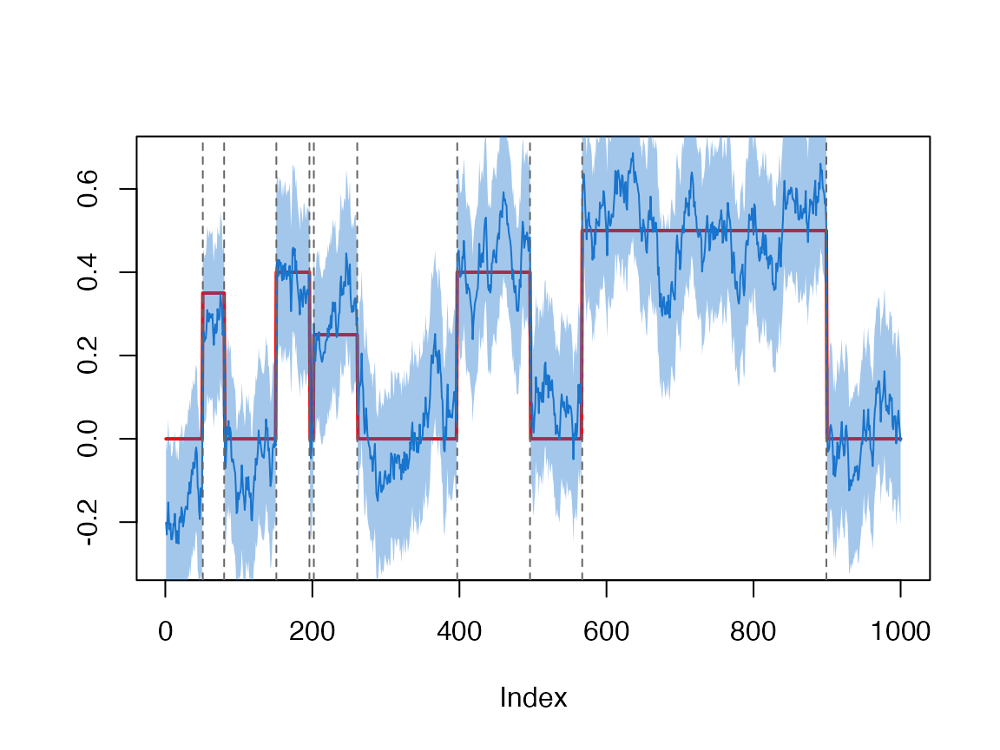
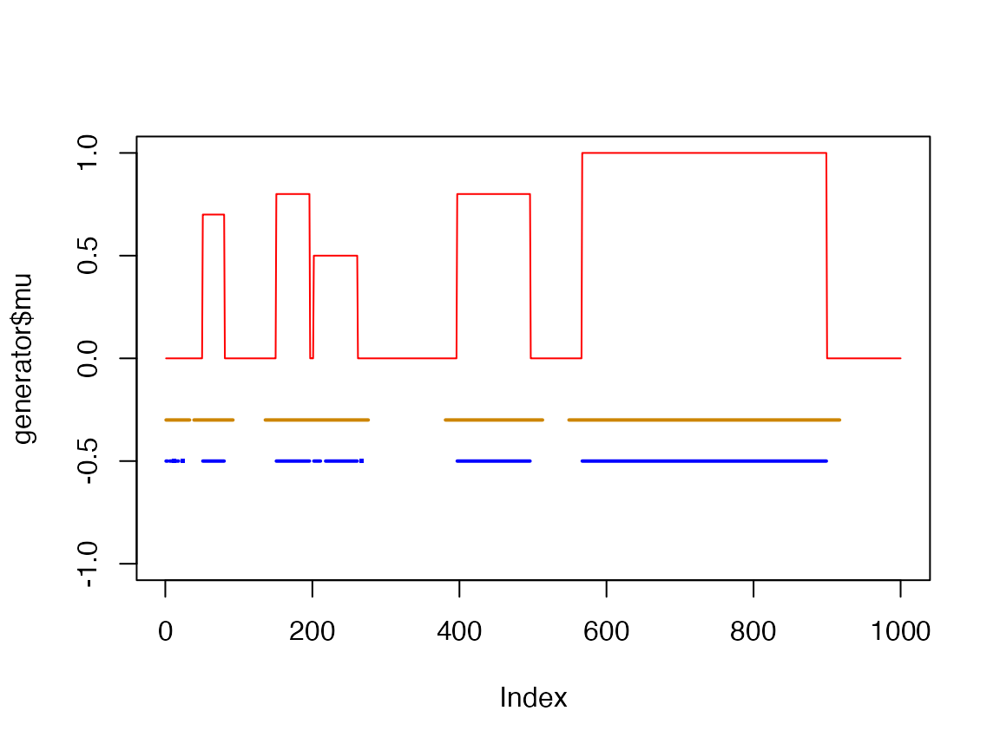
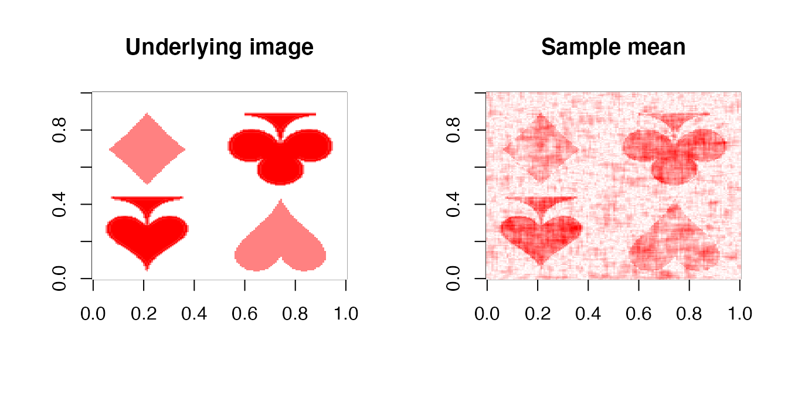
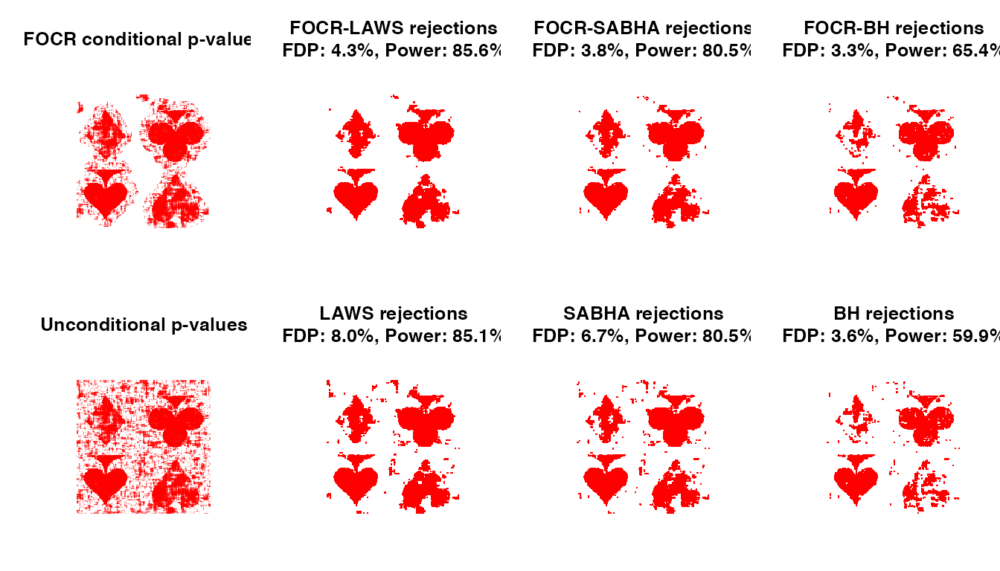
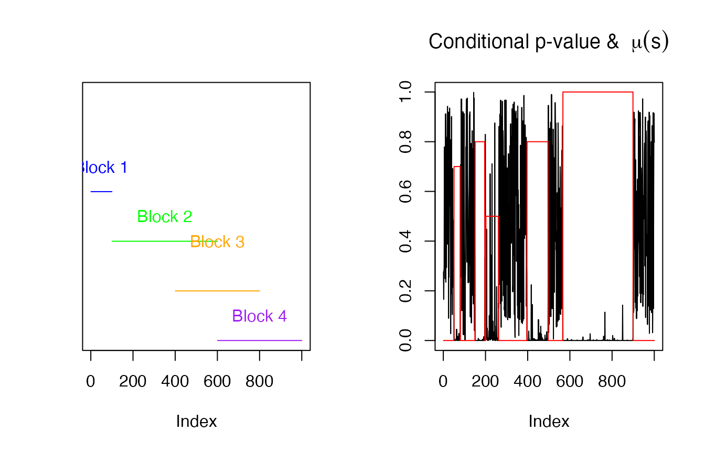
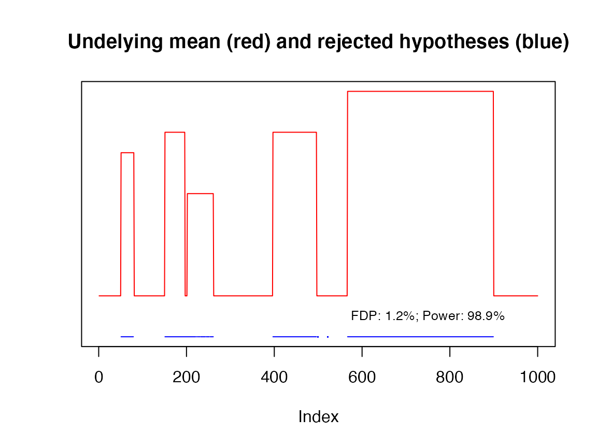

vignettes/false-overlapped-cluster-rate.Rmd
false-overlapped-cluster-rate.RmdIn continuum data, we often want to find the support of the functions. This problem can be solved by simultaneously testing \(H_{0}(s): f(s)=0\) and find \(s\) such that null hypotheses are rejected. In many conventional multiple testing procedures, each \(s\) is treated separately. However, in functional settings, \(f(s)\) is affected by \(s'\) nearby. It is more reasonable to take \(H_{0}(s'), \forall s'\) near \(s\) into account.
The FOCR framework provides a flexible framework allowing aggregating blocks/clusters of \(s\). The clusters of different \(s\) can be overlapped. Our first goal is to find connected regions that contain significant points. Then we perform post-selection inferences on the blocks and further select hypotheses that controls the FDR. This two-stage framework tends to be more powerful than applying FDR control methods directly to marginal unconditioned p-values. It also prevents inflated FDR for methods such as LAWS[3] and SABHA[4] under dependence.
This package focr provides a two-stage multiple testing control procedure:
ROI), with FOCR controlled at desired level; (see function focr_initial for documentation)focr for documentation)In the rest of this vignette, we refer to FOCR framework or FOCR-XXX as this two-stage procedure where XXX is the name of post-selection procedure, and FOCR or FOCR error as the type-I error measure for overlapped blocks.
We generate a functional data as follows. In the figure, the red solid line is the underlying step function. The blue line is the data sample mean, and ribbon around is the 95% point-wise confidence interval. Our goal is to find the support of the function.
library(focr)
set.seed(400)
generator <- simulation_data_1D(n_points = 1000, mu_type = 'step')
data <- generator$gen_data(snr = 0.5)
plot(generator, data = data, snr = 0.5)
We apply the FOCR-BH approach to control the FDR at level 0.05. FOCR-BH uses the Benjamini-Hochberg (BH) procedure as the FDR control method in stage-II.
res <- focr(data = data, block_size = 21,
alpha = 0.05, fdr_method = 'BH', verbose = TRUE)Let’s plot \(s\) where the null hypotheses \(\mu(s) = 0\) are rejected. The orange line segments indicate the initial rejections that control the FOCR (cluster-level ROI). The blue line segments are the FOCR-BH final rejections that control the FDR (individual level).
plot(generator$mu, type = 'l', col = 'red', ylim = c(-1,1))
abseg(res$rej_hypotheses, y = -0.3, col = 'orange3', lwd = 2)
abseg(res$post_selection$rejs, y = -0.5, col = 'blue', lwd = 2)
To calculate the false discovery proportion and statistical power of this run,
Let’s generate a 2D sample data (\(150\times 158\)). The red colored pixels are non-zeros, and white pixels are true null pixels. Our goal is to extract non-zero pixels (red).
library(focr)
set.seed(400)
generator <- simulation_data_2D(cov_type = 'AR', n_obs = 100, rho = 0.8)
data <- generator$gen_data(snr = 0.4)
mu <- generator$mu
pal <- colorRampPalette(c('white', 'red'))(64)
pal2 <- colorRampPalette(c('red', 'white', 'white'))(64)
pal3 <- colorRampPalette(c("#FF8181", 'white', "#FF8181", 'red'))(64)
par(mfrow = c(1,2))
image(mu, zlim = c(0,1), col = pal, main = "Underlying image")
image(array(colMeans(data), dim(mu)), col = pal3, main = "Sample mean")
For each pixel \(s\), we test \(H_{0}(s): f(s)=0\) versus \(H_{1}(s): f(s)\neq 0\). For FOCR-based methods, we need to provide block size (diameter in pixels + 1). A proper block size can be determined from cor(data[,1:50])[1,]. The correlation between the first pixel and the second pixel is 0.3, and the correlation between the first pixel and the third pixel is 0.009 (small). Therefore, only adjacent pixels are correlated, hence the block radius is 1, and block_size=1x2+1=3.
# Run FOCR-BH
dim(data)
block_size <- 15
bandwidth <- 3.5
res_LAWS <- focr(data = data, block_size = block_size,
alpha = 0.05, fdr_method = 'LAWS', bandwidth = bandwidth,
dimension = dim(mu), verbose = TRUE)
res_SABHA <- focr(data = data, block_size = block_size,
alpha = 0.05, fdr_method = 'SABHA', bandwidth = bandwidth,
dimension = dim(mu), verbose = TRUE)
res_BH <- focr(data = data, block_size = block_size,
alpha = 0.05, fdr_method = 'BH',
dimension = dim(mu), verbose = TRUE)Notice data is flattened as a matrix of dimension \(100 \times 23700\) (100 observations and \(150\times 158\) columns)
The following figure shows the FOCR conditional p-values and FOCR-LAWS final rejections side-by-side. As comparisons, we also show the results of LAWS[3] and BH[1] procedure on unconditional p-values. Under dependence, the FOCR-LAWS avoids inflated FDR compared to original LAWS method. Our approach also tends to select less isolated pixels outside of the cluster. It is also more powerful than the BH procedure.
par(mfrow = c(2, 4), mar = c(2.1, 4.1, 4.1, 2.1))
image_dimension <- dim(mu)
plot_rejections <- function(rej, method){
img <- array(NA, image_dimension)
focr_bh <- rej$rejs
img[focr_bh] <- 1
image(img, zlim = c(0,1), col = pal, asp = 1, axes = FALSE,
main = sprintf('%s rejections\nFDP: %.1f%%, Power: %.1f%%',
method, fdp(focr_bh, generator$support)*100,
pwr(focr_bh, generator$support)*100))
}
# Plot conditional p-values
cond_pvals <- res_LAWS$cond_pvals
dim(cond_pvals) <- dim(mu)
image(cond_pvals, zlim = c(0,1), col = pal2,
main = 'FOCR conditional p-values', asp = 1, axes = FALSE)
# Plot final rejections
plot_rejections(res_LAWS$post_selection, res_LAWS$method)
plot_rejections(res_SABHA$post_selection, res_SABHA$method)
plot_rejections(res_BH$post_selection, res_BH$method)
# Compare with methods on unconditional p-values
pvals <- res_BH$uncond_pvals
dim(pvals) <- image_dimension
image(pvals, zlim = c(0,1), col = pal2,
main = 'Unconditional p-values', asp = 1, axes = FALSE)
# Under dependence, LAWS must use large bandwidth
# and small purity value (initial filter) to avoid
# inflated FDR, therefore we cannot use small ones
# as FOCR-LAWS
rej_LAWS <- LAWS(pvals, alpha = 0.05, bandwidth = bandwidth,
dimension = 'two', verbose = TRUE)
rej_SABHA <- SABHA(pvals, alpha = 0.05, bandwidth = bandwidth,
dimension = 'two', verbose = TRUE)
rej_BH <- BH(pvals, alpha = 0.05)
plot_rejections(rej_LAWS, 'LAWS')
plot_rejections(rej_SABHA, 'SABHA')
plot_rejections(rej_BH, 'BH')
The built-in post-selection FDR procedures are:
BH (Benjamini and Hochberg, 1995): controls the FDR under independence or PRDS
BY (Benjamini and Yekutieli, 2001): controls the FDR under arbitrary dependenceSABHA (Li and Barber, 2019): controls the FDR under independence (or asymptotically under weak dependence)LAWS (Cai, Sun, and Xia, 2021): controls the FDR under independence (or asymptotically under weak dependence)The post-selection FDR method can be specified via fdr_method parameter. For example,
# Change `fdr_method` to BH, BY, SABHA, or LAWS
res <- focr(data = data, block_size = 3,
alpha = 0.05, fdr_method = 'BY')Alternatively, fdr_method can be a custom function as follows:
#' @param pvals conditional p-values
#' @param alpha FDR level to control
#' @param ... other parameters needed
my_method <- function(pvals, alpha, ...){
(your code here)
}
res <- focr(data = data, block_size = 3,
alpha = 0.05, fdr_method = my_method)The returned values by my_method will be accessible as res$post_selection.
The function focr() runs the post-selection FDR control procedure right after the stage-I. Although convenient, it might not be optimal in some scenarios. Under the following scenarios, it is highly recommended to use the focr_initial function:
The definition of focr_initial function is:
focr_initial <- function(
data, data_corr, blocks, nblocks = ncol(data), mu = 0, alpha = 0.05,
verbose = FALSE, side = c('two', 'left', 'right'), ...)The data_corr allows prespecified correlation matrix. blocks can be a list of column indices or a function that returns column indices. When blocks is a list, nblocks is ignored. When blocks is a function, nblocks defines the total number of blocks.
library(focr)
set.seed(10)
generator <- simulation_data_1D(n_points = 1000, mu_type = 'step', cov_type = 'iid')
#> iid error
data <- generator$gen_data(snr = 0.5)
dim(data)
#> [1] 100 1000
# Run stage-I with customized blocks
res <- focr_initial(data, blocks = function(col){
if(col %in% 1:100){ return(1:100) }
if(col %in% 101:400){ return(101:600) }
if(col %in% 401:800){ return(401:800) }
if(col %in% 801:1000){ return(601:1000) }
})There are 4 blocks in this case:
par(mfrow=c(1,2))
plot(generator$mu, col = 'red', type = 'n', ylab = '',
ylim = c(-1,0), yaxt = 'n')
text(x = 50, y = -0.3, "Block 1", col = 'blue')
abseg(1:100, y = -0.4, col = 'blue')
text(x = 350, y = -0.5, "Block 2", col = 'green')
abseg(101:600, y = -0.6, col = 'green')
text(x = 600, y = -0.6, "Block 3", col = 'orange')
abseg(401:800, y = -0.8, col = 'orange')
text(x = 800, y = -0.9, "Block 4", col = 'purple')
abseg(601:1000, y = -1, col = 'purple')
plot(res$cond_pvals, type='l', ylab = '',
main = bquote('Conditional p-value & '~mu(s)))
lines(generator$mu, col = 'red')
The conditional p-values are calculated and stored at res$cond_pvals. It can be used for further inference (such as FDR control). For example:
rej <- LAWS(res$cond_pvals, bandwidth = 20, dimension = 'one')
plot(generator$mu, col = 'red', ylab = '',
ylim = c(-0.2,1), yaxt = 'n', type = 'l',
main = "Undelying mean (red) and rejected hypotheses (blue)")
abseg(rej$rejs, y = -0.2, col = 'blue')
text(x = 750, y = -0.1, cex = 0.8, sprintf(
"FDP: %.1f%%; Power: %.1f%%",
fdp(rej$rejs, generator$support) * 100,
pwr(rej$rejs, generator$support) * 100
))
[1] Y. Benjamini and Y. Hochberg. “Controlling the false discovery rate: a practical and powerful approach to multiple testing”. In: Journal of the Royal statistical society: series B (Methodological) 57.1 (1995), pp. 289-300.
[2] Y. Benjamini and D. Yekutieli. “The control of the false discovery rate in multiple testing under dependency”. In: Annals of statistics (2001), pp. 1165-1188.
[3] T. T. Cai, W. Sun, and Y. Xia. “Laws: A locally adaptive weighting and screening approach to spatial multiple testing”. In: Journal of the American Statistical Association (2021), pp. 1-14.
[4] A. Li and R. F. Barber. “Multiple testing with the structure-adaptive Benjamini-Hochberg algorithm”. In: Journal of the Royal Statistical Society: Series B (Statistical Methodology) 81.1 (2019), pp. 45-74.